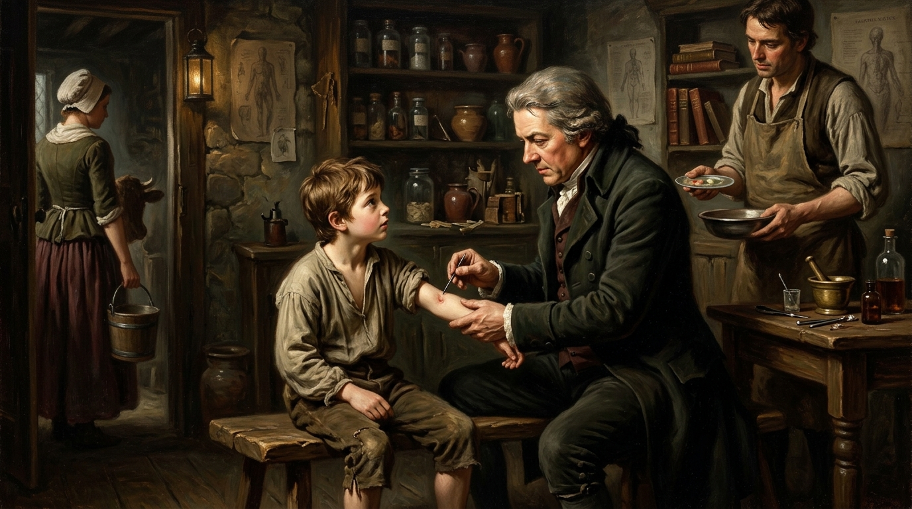
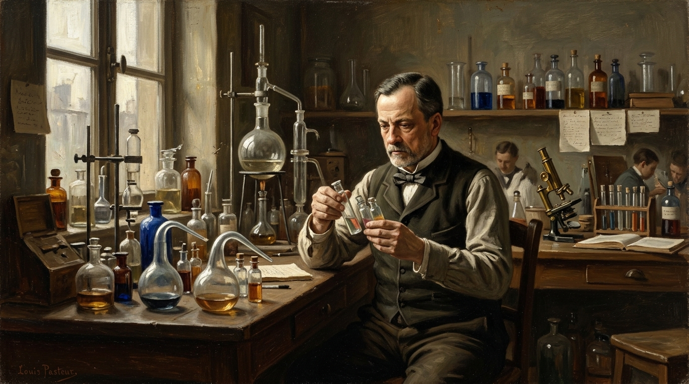
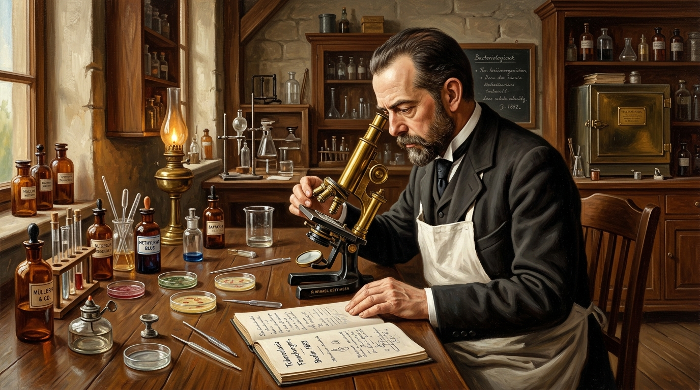
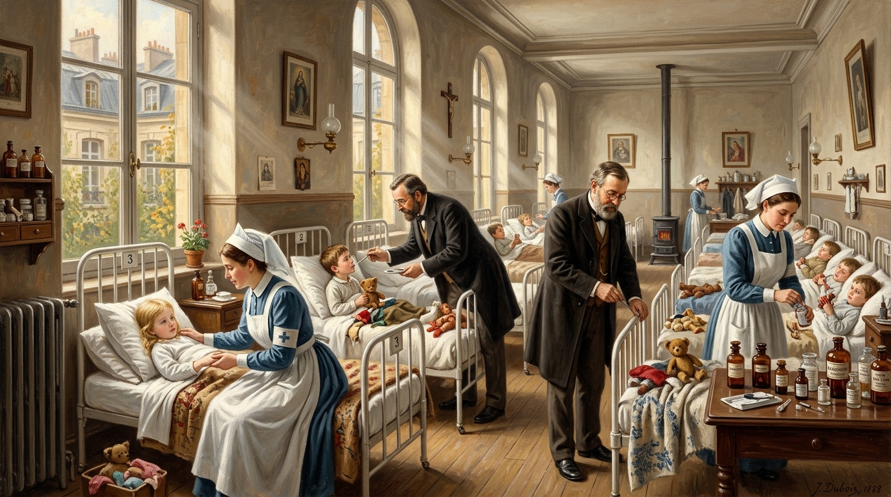
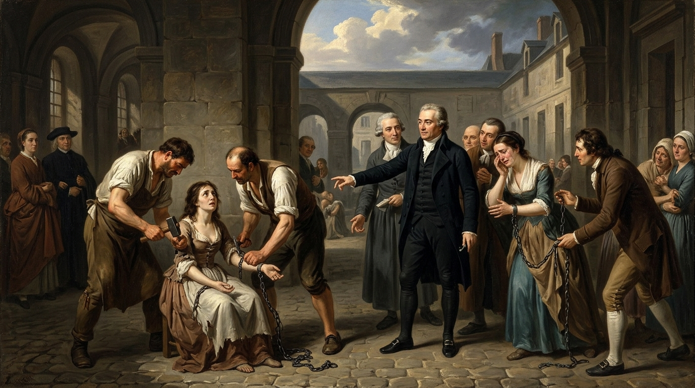

XIX-XX ғғ. Қоғамдық денсаулық сақтау және
медициналық-биологиялық бағыттың дамуы
Накипов Әділжан
107Б Жалпы медицина
Аханай Ернұр
107Б Жалпы медицина
Серік Мерей
107Б Жалпы медицина
Дәрістің мақсаты, жоспары мен кілт сөздері
Медицина тарихындағы санитарлық-эпидемиологиялық секіріс пен ғылыми парадигмалар жүйесі.
1. Гигиена және қоғамдық медицина
XIX-XX ғғ. әлемдік медицина: мемлекеттік денсаулық сақтау институционализациясы, қалалық санитария, демографиялық дағдарыстар мен статистикалық есептеулер.
- Холера індетінің тарихи сабақтары
- 5 Ақпараттық төңкеріс әсері
- Дәрігерлер мен төсек-орын тапшылығы
2. Жұқпалы дерттер және Вакцинация
Эмпирикалық вариоляциядан эксперименттік иммунологияға өту: Э. Дженнер, Л. Пастер, Р. Кох триумфы және ауру қоздырғыштарын жою әдістері.
- Шешекке қарсы сиыр шешегі (1796)
- Сібір жарасы мен құтыру вакцинасы
- Кох таяқшасы және туберкулин
3. Педиатрия және Клиникалық Психиатрия
Бала организмінің ерекшеліктерін мойындау және психикалық дерттерге гуманды, биологиялық-органикалық көзқарастың орнығуы.
- Глиссон, Сиденхэм және бала емханалары
- Ф. Пинель: шынжырларды шешу реформасы
- В.М. Бехтерев психоневрологиялық мектебі
XIX ғасырдың әлеуметтік дағдарысы және Холера пандемиялары
Өнеркәсіп төңкерісі, жедел урбанизация және жеке емдеуден «Мемлекеттік денсаулық сақтауға» өту.
Холера дерті: Мемлекеттік реформалардың катализаторы
XIX ғасырдың алғашқы жартысында холера (тырысқақ) індеті Еуропа, Ресей және АҚШ елдерінде алапат жылдамдықпен тарады. Бұрын-соңды болмаған өлім-жітім мемлекеттерді медицинаға деген көзқарасты түбегейлі өзгертуге мәжбүр етті:
- Санитарлық полиция мен заңнама: Тұрғын үйлердің тығыздығын, ауыз су сапасын мемлекеттік бақылауға алу.
- Су құбыры мен канализация: Джон Сноудың Лондондағы "Broad Street" су колонкасын зерттеуінен басталған таза инфрақұрылым құрылысы.
- Жаппай үгіт-насихат: Жеке гигиена, қайнатылған су, қол жуу талаптарын халыққа міндеттеу.
Парадигманың ауысуы: Жеке емнен Қоғамдық денсаулыққа
XIX ғасырға дейін медицина тек ауырып қалған ауқатты адамды жеке емдеумен шектелсе, холера мен оба індеттері «Кез келген кедейдің ауруы бүкіл қоғамға қауіп төндіреді» деген ақиқатты дәлелдеді.
Адамзаттың 5 ақпараттық төңкерісі және Медицина
Ғылыми білімді сақтау, тарату және жаһандық деңгейде жедел жеткізу эволюциясы.
Жазудың пайда болуы
Ежелгі емдеу тәжірибелері папирустар мен тастарға жазылып, медициналық білім ұрпақтан ұрпаққа жүйелі түрде сақталды.
Кітап басып шығару
Везалийдің анатомиялық атластары мен ғылыми трактаттар жаппай көбейіп, білім дәрігерлерге қолжетімді болды.
Телеграф, телефон, радио
Індеттер туралы дабылдар дүние жүзіне лезде жетіп, халықаралық санитарлық конвенциялар құрылды.
Микропроцессорлар мен ЭЕМ
КТ, МРТ диагностикасы, зертханалық деректерді автоматты өңдеу және электронды медицинаның негізі қаланды.
Ғаламтор және ЖИ
Жер шарын біртұтас алақанға сыйғызған телемедицина, биоинформатика, генетикалық секвенирлеу және қашықтан емдеу.
Медициналық қорытынды:
XIX ғасырдың соңындағы 3-ақпараттық төңкеріс медицинаны локалды (шектеулі) сипаттан жаһандық ғылыми желіге айналдырды. Пастер мен Кохтың жаңалықтары апта ішінде әлемнің басқа бұрыштарына жетіп отырды.
1910-1913 жж. Демографиялық дағдарыс және Ресурс тапшылығы
Ресей империясы мен Батыс Еуропа елдерінің салыстырмалы статистикалық көрсеткіштері.
Жалпы өлім-жітім (1000 адамға шаққанда, 1910-1913 жж.)
Нәресте өлімі және Медициналық инфратұрылым тапшылығы
Ресейде жыл сайын дүниеге келген 6 миллионға жуық баланың 2 миллионы жұқпалы аурулар мен дұрыс тамақтанбаудан шетінеген (нәресте өлімі 1000 балаға 250-269 болды).
Теориялық іргетас: Жаратылыстану мен Эксперименттік ғылым
Тірі организмдердің жасушалық құрылымы, эволюция және микробиологияның қос дәуірі.
Жасушалық және Эволюциялық теория
Т. Шванн, М. Шлейден және Рудольф Вирховтың «Барлық жасуша жасушадан пайда болады» (Omnis cellula e cellula) қағидасы аурулардың патогенезін жасушалық зақымдану арқылы түсіндіруге жол ашты. Ч. Дарвиннің эволюциялық ілімі организмнің бейімделу заңдарын айқындады.
Микробиологияның қос дәуірі
1. Эмпирикалық кезең: (XIX ғ. екінші жартысына дейін). Бақылау және халықтық тәжірибеге сүйенген іс-әрекеттер (мысалы, шешекке қарсы вариоляция).
2. Эксперименттік кезең: Зертханалық бактерияларды бөліп алу, қоректік ортада өсіру және иммунитеттің жасушалық/гуморалдық механизмдерін ашу.
Тұңғыш Ғылыми ҒЗИ-лар
1890 жылы құрылған Санкт-Петербург Эксперименттік медицина институты сол дәуірдің озық зертханалық орталығына айналды. Мұнда И.П. Павлов ас қорыту және жоғары жүйке қызметі физиологиясын жасақтаса, В.М. Бехтерев Психоневрологиялық институт негізін салды.
Эдвард Дженнер: Вариоляциядан Вакцинацияға өту ерлігі
1796 жылғы 14 мамырдағы тарихи эксперимент және шешек дертіне тосқауыл қою.
Шешекпен күрес және тарихи байқау
Табиғи шешек ғасырлар бойы халықты қырған ең қауіпті кесел болды. Ежелгі заманнан келе жатқан вариоляция (шешек бөртпесін тікелей адамға егу) көбінесе адамдардың ауыр сырқаттануына немесе өліміне әкеліп соқтыратын.
💡 Дженнердің ұлы ашылуы (1749-1823):
Жас дәрігер Эдвард Дженнер сауыншы қыз Сара Нельменің сиыр шешегімен ауырғаннан кейін қара шешекке мүлдем шалдықпайтынын байқайды.
1796 жылғы 14 мамыр Эксперименті:

Луи Пастер: Ғылыми Иммунологияның негізін қалаушы
Тауық холерасынан күйдіргі мен құтыруға қарсы алғашқы зертханалық вакциналар.

Иммунитеттің ғылыми заңдылығы
Француз химигі әрі микробиологы Луи Пастер (1822-1895) тауық холерасын зерттей отырып: «Бірінші әлсіреген ауру кейінгі өлімші дерттен қорғайды» деген фундаменталды қағиданы эксперимент жүзінде дәлелдеп, бұл құбылысты «иммунитет» (лат. immunitas) деп атады.
Роберт Кох: Бактериологияның алтын дәуірі және Кох триадасы
Туберкулез, тырысқақ қоздырғыштарын ашу және 1905 жылғы Нобель сыйлығы.
Роберт Кохтың (1843-1910) іргелі жетістіктері
Неміс ғалымы бактерияларды таза дақыл ретінде өсіру, микрофотография және анилиндік бояу әдістерін енгізіп, инфекциялық аурулар этиологиясын дәлелдеді:
- 1876 ж. Сібір жарасы: Bacillus anthracis таза дақылын алып, спора түзу сатыларын сипаттады.
- 1882 ж. 24 наурыз: Адамзаттың басты қасіреті болған Туберкулез микобактериясын («Кох таяқшасы») ашты.
- 1883 ж. Холера вибрионы: Мысыр мен Үндістандағы зерттеулер барысында Vibrio cholerae қоздырғышын анықтады.
- Туберкулин және Нобель сыйлығы (1905 ж.): Диагностикалық туберкулин сынамасын ойлап тапқаны үшін марапатталды.

Педиатрия: «Бала — кішірейтілген ересек емес»
Бала анатомиясы мен физиологиясының дербестігін тану және алғашқы мамандандырылған ауруханалар.

Педиатрияның дербес ғылымға айналу кезеңдері
XVIII ғасырға дейін бала денсаулығы ересектермен бірдей саналған. Бала ағзасының даму ерекшеліктерін ескеру қажеттілігі келесі ғалымдардың еңбегімен қалыптасты:
Фрэнсис Глиссон (1650)
Рахит (мешел) ауруы мен сүйек жүйесінің өзгеруін алғаш ғылыми сипаттады.
Томас Сиденхэм
«Ағылшын Гиппократы»: қызылша, қызамық, шешектің балалардағы өту ерекшелігін ашты.
Жан-Жак Руссо
Балалардың табиғи иммунитетін арттыруда ана сүтімен емізуді және таза ауаны насихаттады.
Карл Рот & Р. Вирхов
Балалардың тамақтану бұзылыстары мен иммундық жасушалық патологиясын зерттеді.
Клиникалық Психиатрия: Шынжырды шешу және Биологиялық Парадигма
Филипп Пинель гуманизмі және психикалық дерттердің табиғи-органикалық этиологиясы.
Филипп Пинель және Жан-Этьен Эскироль
1793-1795 жылдары Париждегі Бисетр және Сальпетриер ауруханаларында Филипп Пинель науқастардың мойнындағы темір шынжырларды шешіп, емдеуге адамгершілік (моральдық) пен мейірімділік қағидасын енгізді.
- Табиғи-биологиялық себептер: Ауру тылсым жын-шайтаннан емес, вегетативтік жүйке жүйесі мен ми зақымдануынан пайда болады.
- Кешенді ем: Ұзақ стресс пен күйзелісті емдік шаралармен, психотерапиямен және химиялық/өсімдік дәрілерімен емдеу.
- В.М. Бехтерев мектебі: Психоневрологиялық институт негізінде клиникалық психопатологияны қалыптастырды.

XIX-XX ғғ. медицинасының сабақтары және Бүгінгі заман
Дәлелді медицинаның қалыптасуы және Қазақстанның заманауи денсаулық сақтау басымдықтары.
1. Жаппай вакцинация жүйесі
Дженнер мен Пастердің бастамасымен бүгінгі Ұлттық екпе күнтізбесі қалыптасты. Соның арқасында қара шешек жер бетінен толық жойылды, ал полиомиелит, сіреспе және дифтерия сирек дерттер қатарына енді.
2. Ана мен баланы қорғау
1913 жылы Ресейде болған 250-269‰ нәресте өлімімен салыстырғанда, бүгінгі Қазақстанда нәресте өлімі 1000 тірі туғанға 7-8-ге дейін азайды. Бұл педиатрия мен перинаталдық орталықтардың жемісі.
3. Санитарлық қадағалау & Инфектология
Ковид-19 пандемиясы көрсеткендей, Роберт Кох пен Луи Пастер салған эпидемиологиялық қадағалау және шұғыл молекулярлық-генетикалық мониторинг кез келген мемлекеттің басты қауіпсіздік қалқаны болып табылады.
Дәрісті бекіту: Quiz Arena (10 сұрақ)
Біліміңізді тексеріңіз! Дұрыс жауапты таңдап, жылдам нәтиже алыңыз.
Дәрістік бақылау сұрақтары және Ғылыми Жауаптары
Оқытушы мен емтихан қабылдаушыларға арналған толыққанды академиялық дәлелдер.
Терминдер Глоссарийі, Әдебиеттер & Авторлар
Қазақстан-Ресей Медициналық Университеті • 107Б Жалпы медицина тобының қорытындысы.
Негізгі Медициналық Терминдер
Пайдаланылған Әдебиеттер Тізімі
- Биғалиева Р. Бүкіләлемдік медицина тарихы. Оқулық / Р.Қ. Биғалиева. – Алматы, 2009. – 464 б.
- Сорокина Т.С. История медицины: Учебник. – 2-е изд. / Т.С. Сорокина. – М.: ПАИМС, 1994. – 384 c.
- Лисицын Ю.П. История медицины: учебник / Ю.П. Лисицын. – М.: ГЭОТАР-Медиа, 2022. – 400 c.
- Симонян Р.З. История медицины: со времен первобытного общества до настоящего времени. – М.: Ай Пи Ар Медиа, 2022. – 307 с.